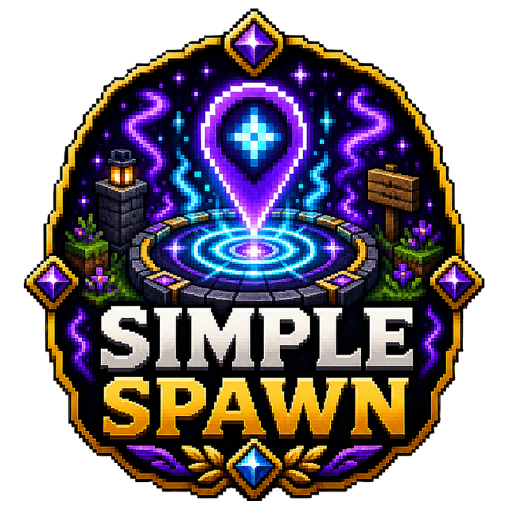

✓
Set a server spawn
Administrators record the exact central location players should use.

A lightweight way to set and use a server spawn.
Full overview
SimpleSpawn supplies the essential set-spawn and return-to-spawn workflow without installing a broad essentials package. It is intended for small servers that want one clear location and a few dependable commands.
The focused feature set keeps configuration and permission management easy for administrators who do not need homes, warps, kits and dozens of unrelated utilities.
How it works
An administrator records the desired server spawn point. Players with access can then teleport back to that location through the plugin command.
The saved location persists across restarts, giving a small server a dependable central arrival and meeting point.
Administration
The plugin is intentionally narrow in scope. Confirm teleport safety, world loading and legacy compatibility on the target build before using it as the main spawn system.
Feature breakdown
Each headline feature is expanded below so visitors can understand the real server use rather than seeing a short tag list.
Administrators record the exact central location players should use.
Players return through a simple command.
Access can be separated between normal use and administration.
No constant tasks or large data model are required.
The utility is easy to understand and maintain.
Provides the core need without unrelated commands.
Getting started
The platform buttons include downloads, changelogs and the original public resource discussion.
Test the legacy build on the current server.
Set the spawn from a safe loaded location.
Configure player and administrator permissions.
Test teleporting from other worlds and after a restart.
Source architecture
me.Ghoul.SimpleSpawn.Main (1)
Main
Configuration reference
Top-level sections and defaults are summarised from the supplied resources.
Permissions
Defaults and descriptions come directly from plugin.yml.
Sets the World SpawnPoint
Default: op
Allows Use Of The Command, /Spawn
Default: op
Commands
Aliases, usage and permissions come directly from plugin.yml.
Base Command For The Plugin
Usage: /ss · Permission: None declared
Source-verified reference
This static reference is built from the supplied plugin.yml, YAML resources and Java source. No browser-generated documentation is used.
Community feedback
Live ratings and recent written reviews from the public Spigot resource page.
Review data is loaded through Spiget. Static rating fallbacks remain visible if the service is unavailable.
Related projects
Survival Utility
Crystal-themed healing tools for survival gameplay.